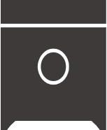

Al CILINDRO ingresa la mezcla airecombustible y, luego de haber alcanzado cierta presión de autoencendido (Motores a Diesel) o haber iniciado una chispa (Motores Otto a gasolina), ocurre la combustión.
Se podría decir que el PISTÓN es el medio fisico para transformar a energía mecánica, mediante el movimiento lineal, la energía proporcionada por el aumento de presión al momento de la combustión.
Sistema en funcionamiento:
- Cilindro
- Pistón
- Brazo del pistón
